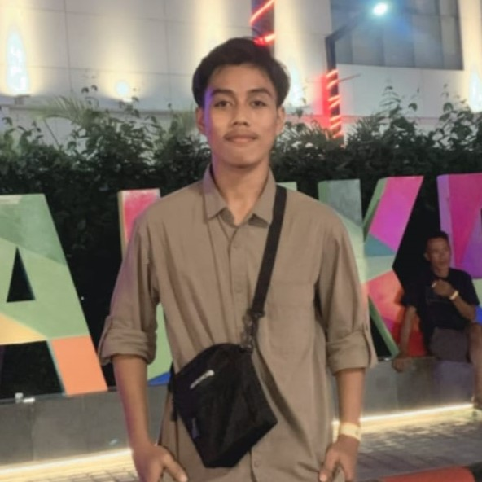
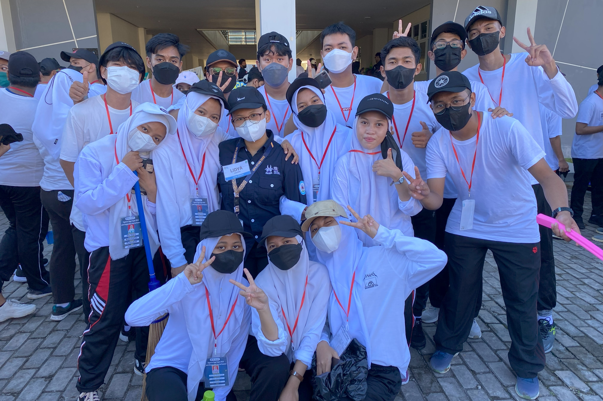
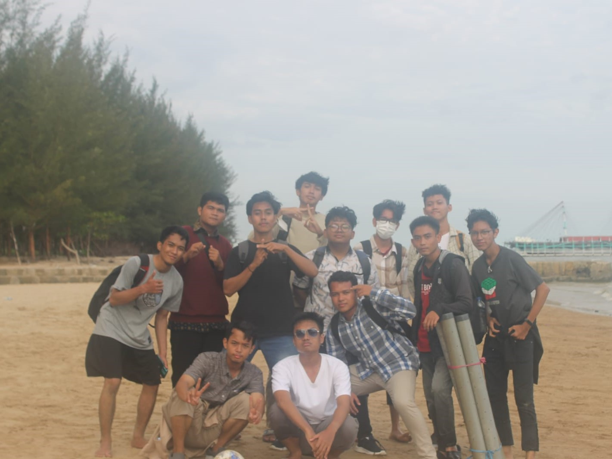

Halo Semua 👋, Saya Wiranto pens Emyu
Saya adalah seorang mahasiswa Informatika semester 2 di salah satu perguruan tinggi yang terkenal yakni Institut Teknologi Kalimantan.
My Profile
Perkenalkan Nama saya Wiranto NIM 11221030 dari prodi Informatika, saya berusia 19 tahun saya lahir di Girimukti tepat pada tanggal 17 maret 2004 jam 12 bilang mamaku,sebelum saya menjadi mahasiwa informatika saya telah banyak melewati banyak perjalanan, saya dulunya merupakan siswa lulusan SMKN 2 Penajam Paser Utara jurusan TKJ, saya senang dijurusan ini kenapa? gatau juga si sebenernya hehe tapi yang pasti saya suka dengan berbau jaringan kaya asik aja gitu.
Makannya banyak orang bertanya apalagi pas sosil kenapa saya memilih prodi informatika ini ya karena ini tadi saya ingin melanjutkan pertualangan saya di TKJ yaa walaupun di informatika ga banyak materi tentang jaringan yaa meskipun begitu saya tetap melanjutkan pendidikan ini, banyak positifnya masuk di informatika ini contoh kecilnya saja baru 2 semester saja saya sudah banyak mendapatkan pengalaman pengalaman entah itu dari kating maupun dari temen seprodi. saya pernah ketolak UKM Ouroboros hehe tapi gapapa saya malah tertantang untuk semester berikutnya untuk mendaftar di UKM tersebut hehe malah panjang yaa,,, oiya saya memiliki hobi yaa banyak si sebenernya main game saya suka, ini si kalo paling hobii yaa main bola yaa.
Banyak hal positif masuk di informatika ini contoh kecilnya saja baru 2 semester saja saya sudah banyak mendapatkan pengalaman pengalaman entah itu dari kating maupun dari temen seprodi. saya pernah ketolak UKM Ouroboros hehe tapi gapapa saya malah tertantang untuk semester berikutnya untuk mendaftar di UKM tersebut hehe malah panjang yaa,,, oiya saya memiliki hobi yaa banyak si sebenernya main game saya suka, ini si kalo paling hobii yaa main bola yaa.
My Journey
 
Pada Foto pertama ini adalah awal perjalanan saya saat memulai perkuliahan, didalam foto tersebut ialah kegiatan bersih bersih yang dimana kegiatan tersebut akhir dari kisah kegiatan Spin Etam ITK 2022 hehehe, dan di Foto kedua ini adalah foto kegiatan food-gatering yang dimana ini ada lah kegiatan sebelum memlulai semester 2 seru sii pas kegiatan ini keren kere, dan yang terakhir poto ketiga ini ialah perjalanan saja juga yaa lumayan berkesan hehehe dan ceritaa di foto ini ialah perlombaan futsal dalam acara Hut-IF atau disebut dengan Infinite vol.2 yang baru saja perlombaannya selesai digelar pada bulan lalu disini tim saya menang cess sempet diragukan pada day 2 tapi tetep saja mental kami ada (emot kece). pak eko seorang seni, ewako wani wani wani.